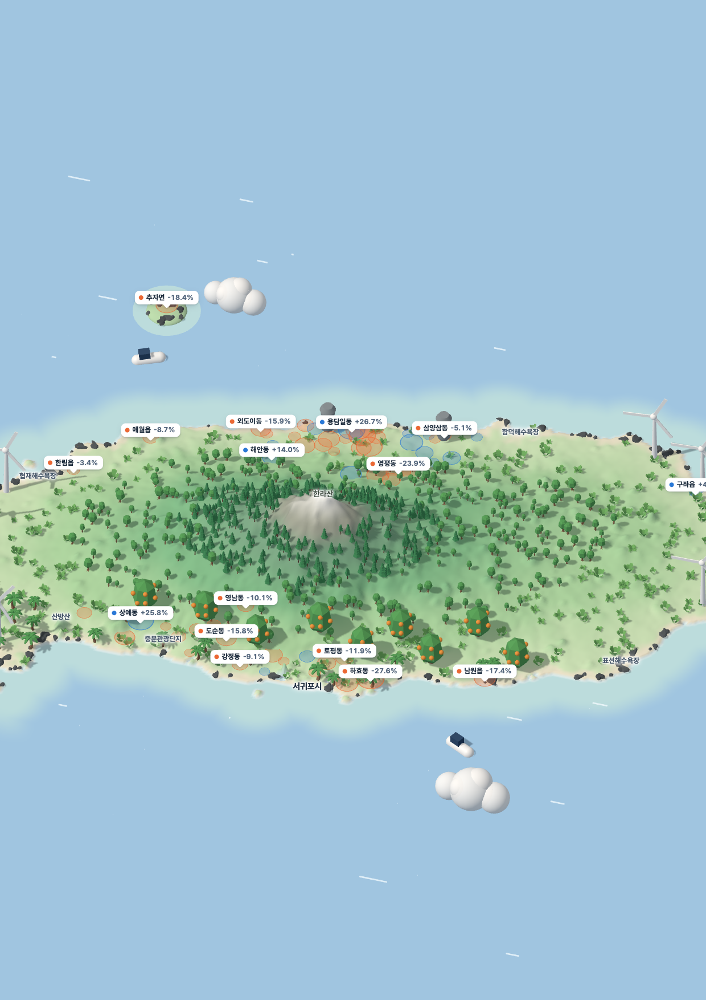
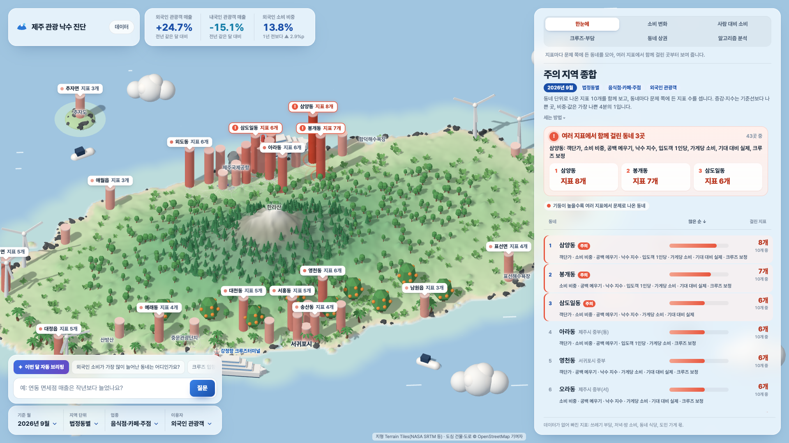
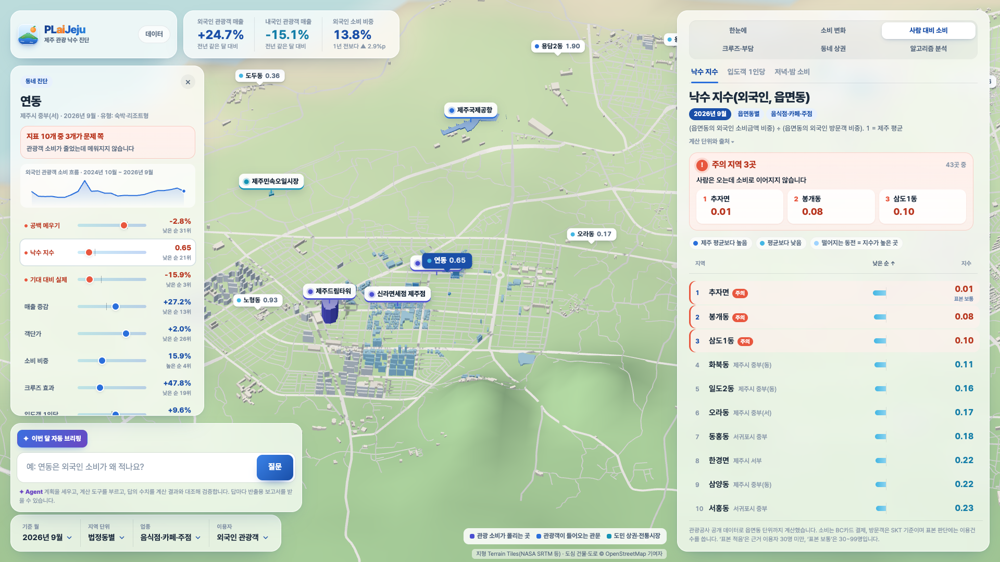
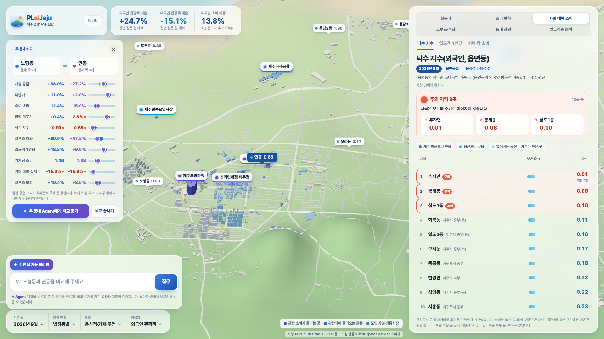
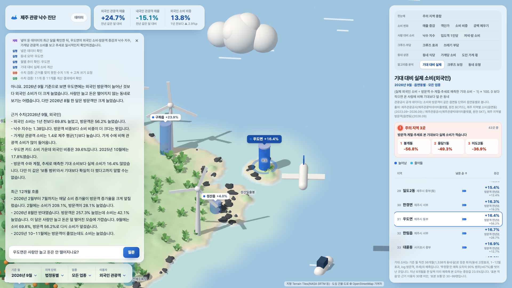
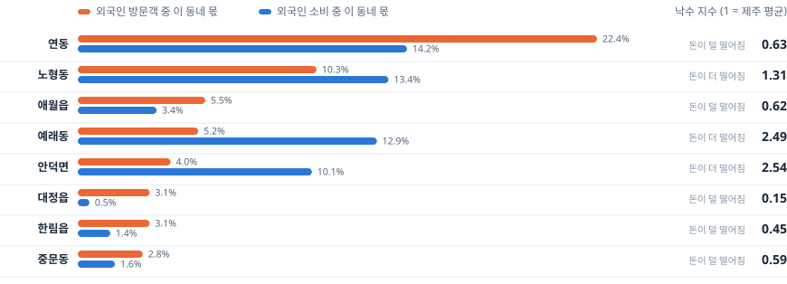
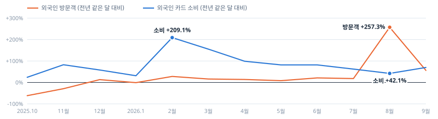
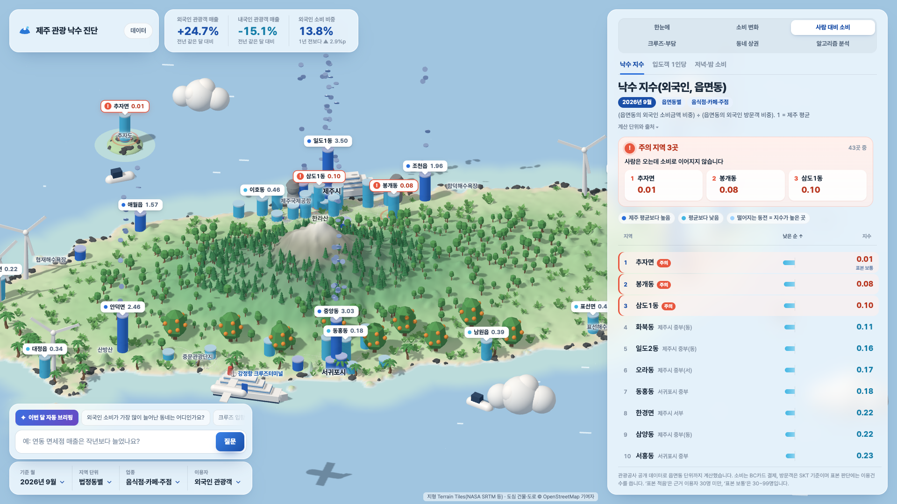

"외국인 관광객이 늘었는데, 돈은 어느 동네에 떨어지나요?"
"우도면은 사람만 늘고 돈은 안 떨어지나요?"

주의 지역 종합 화면(실데이터 2026년 9월). 왼쪽에서 묻고, 3D 섬과 오른쪽 목록에서 여러 지표에 함께 걸린 동네를 봅니다.
| 핵심 데이터 | 제주빅데이터센터 카드 이용 현황(1-08·1-14), 외국인·내국인 유동인구(4-15·4-11), 종량제봉투(5-03), 외식업 POS(1-19), 업종별 매장 수(1-17). 공개 실데이터 5종 내장(관광공사 소비·방문객, 입도통계, 크루즈 실적, 상가 매장 수) |
| 사용 모델 | Claude Opus 5.5(claude-opus-5-5) 도구 호출 Agent. API 없이도 끝까지 도는 기본 모드 |
| 실행 환경 | 센터 PC(Windows 11)에서 로컬 서버 + 브라우저. Python 3.12 하나만 설치, 패키지는 동봉 |
| 참가 | 개인 참가 |
제주 관광의 구조가 바뀌고 있습니다. 내국인 관광객은 2026년 5월부터 여섯 달 연속 줄었고, 외국인과 크루즈 관광객은 늘었습니다. 그런데 늘어난 사람만큼 돈이 지역에 떨어지는지는 아무도 동네 단위로 답하지 못합니다.
제주빅데이터센터의 카드 데이터는 이용자를 도민·내국인·중국·일본·동남아·기타외국으로 나눠 법정동·업종별로 갖고 있고, 단기체류 외국인 유동인구는 국적별로 행정동 단위로 있습니다. 이 둘을 겹치면 "사람은 왔는데 돈은 안 쓴 동네"를 셀 수 있지만, 데이터를 고르고 지표를 만들고 반출 기준에 맞추는 일은 전문가의 몫이었습니다.
| 목표 | 달성 방법 |
|---|---|
| 논쟁을 수치로 | "돈이 떨어지는가"를 소비 비중, 낙수 지수, 메움률, 크루즈 기항 효과, 입도객 1인당 소비, 저녁·밤 소비, 동네 식당 체감, 도민 가게 몫, 가게당 관광객 소비 등 12가지 지표로 바꾸고, 문제가 겹치는 동네를 지도에 강조합니다. |
| 누구나 묻는다 | 동네·업종·관광객 구분을 말로 물으면 Agent 가 지표를 고르고 비교합니다. |
| 믿을 수 있다 | 계산은 코드가 하고, 답변의 수치는 계산 결과와 자동 대조합니다. 인과가 아닌 것은 인과가 아니라고 말합니다. |
| 그대로 쓴다 | 행정사무감사 답변서처럼 쓸 수 있게, 반출 기준에 맞는 보고서를 바로 내려받습니다. |
출처: 제주도 방문관광객 실태조사(크루즈 1인당 지출, 2026.4 보도), 제주도 크루즈 전망(2026.1), 제주도관광협회 입도 통계(2026.10), 제주도의회 행정사무감사(2026.10), 제주관광빅데이터플랫폼(2026.11.8 조회), 파이낸셜뉴스(2026.11.9).
센터 PC 에서 실행하는 로컬 웹 프로그램입니다. 이용자는 SQL 이나 코드를 몰라도 됩니다.
| 기능 | 내용 |
|---|---|
| 낙수 진단 12종 | 매출·객단가 증감률, 소비 비중, 내국인 공백 메우기, 낙수 지수, 쓰레기 부담, 크루즈 기항 효과, 저녁·밤 소비, 입도객 1인당 소비, 동네 식당 체감, 도민 가게 몫, 가게당 관광객 소비. 이용자 구분은 외국인 전체·중국·일본·동남아·기타외국·내국인 관광객·도민. |
| 말로 묻는 진단 | Agent 가 지표, 지역, 업종, 이용자 구분을 스스로 정해 짝지어 비교합니다. 예: 크루즈 효과는 면세점(G47130)과 음식점(I56)으로 나눠 봅니다. |
| 데이터 안내 | 부족한 데이터를 "어떤 데이터의 몇 월"로 알려주고, 명세서에서 데이터를 찾아 줍니다. |
| 주의 지역 | 지표마다 문제 쪽으로 가장 치우친 3곳을 산호색 카드·라벨·고리로 강조하고, '주의 지역 종합'에서 여러 지표에 함께 걸린 동네를 먼저 보여줍니다. |
| 반출 가드 | 표본이 적은 값을 가리고 근거 컬럼을 제거합니다. 원본은 외부로 나가지 않습니다. |
| 3D 낙수 지도 | 실제 고도 지형 위에 지역마다 기둥이 솟고, 높이와 색이 값입니다. 낙수 지수는 떨어지는 동전, 크루즈 효과는 항구에서 이어지는 선, 저녁·밤 소비는 해 질 녘으로 보여줍니다. |
| 보고서 | 근거, 계산식, 한계, 출처가 들어간 PDF 와 반출 신청 참고 문서를 만듭니다. |
| 동네 진단 카드·비교 | 동네를 누르면 지표별 값, 제주 안 위치, 문제 쪽 지표, 최근 2년 소비 흐름이 한 장에 모입니다. 두 동네를 나란히 놓고, 버튼 하나로 Agent 질문으로 잇습니다. |
주의 지역 종합 (실데이터: 제주관광공사 소비·방문객, 상가 매장 수, 입도통계, 2026년 9월, 음식점·카페·주점, 외국인 관광객). 여러 지표에서 함께 문제로 나온 동네일수록 기둥이 높고 진합니다. 해상도 1920×1080 기준입니다.
| 위치 | 구성 |
|---|---|
| 왼쪽 | 동네 진단 카드와 두 동네 비교, 질문창과 답변(Claude 가 도구를 골라 계산한 뒤 해석), 진행 단계, 근거 없는 수치 경고, 보고서 내려받기. 데이터 패널은 위쪽 버튼으로 접고 폅니다. |
| 가운데 | 3D 제주 섬과 지역별 기둥. 지표마다 카메라 구도가 바뀌고, 지역을 누르면 그 동네로 날아가 확대합니다. 도심은 실제 건물까지 보입니다. |
| 오른쪽 | 주의 지역 종합과 지표 12종을 고르는 메뉴, 주의 지역 카드, 지역 순위 막대, 계산식, 출처, 표본 비공개 처리 내역. 메움률·상관계수 같은 보조값을 함께 적습니다. |
| 위쪽 | 제주 전체 요약: 외국인 관광객 매출, 내국인 관광객 매출, 외국인 소비 비중. |
| 아래쪽 | 이름표가 붙은 조건 상자 4개: 기준 월, 지역 단위, 업종(면세점·음식점·숙박·소매 등), 이용자 구분. |

동네 진단 카드. 연동을 누르면 실제 건물(OpenStreetMap)로 내려가고, 왼쪽에 지표별 값과 위치가 모입니다.

두 동네 비교. 노형동과 연동을 나란히 놓고, 빨간 값으로 문제 쪽 지표를 짚습니다.
센터 데이터 없이, 프로그램에 든 공개 실데이터만 넣고 질문 한 줄을 던졌습니다. 아래는 그때의 화면 그대로입니다.

질문 "우도면은 사람만 늘고 돈은 안 떨어지나요?" (2026-11-17, Claude Opus 5.5, 실데이터 2026년 9월). 왼쪽 위에 계획·실행·검증 단계가 보이고, 섬과 오른쪽 목록이 답의 지표와 동네로 바뀝니다.
프로그램에 든 공개 데이터(관광공사 소비·방문객, 입도통계, 크루즈 실적)만으로 2026년 9월을 진단한 결과입니다. 가상 데이터가 아닙니다.

읽는 법주황 막대(방문객 몫)가 파랑 막대(소비 몫)보다 길면 사람만큼 돈이 안 떨어지는 동네입니다. 연동은 외국인 방문객의 22.4%가 오지만 소비는 14.2%, 대정읍은 방문객 3.1%에 소비 0.5%입니다. 반대로 예래동·안덕면은 방문객 몫의 2.5배가 쓰입니다.

읽는 법주황 선이 파랑 선 위로 올라간 달이 "사람만 는" 달입니다. 2026년 8월 한 달만 방문객 +257.3%, 소비 +42.1%로 뒤집혔고, 나머지 달은 소비가 더 크게 늘었습니다(2월 소비 +209.1%, 방문객 +28.1%).
소비는 비씨카드 결제만 담아 해외 간편결제와 현금이 빠집니다. 규모가 아니라 방향으로 읽어야 하며, 크루즈 효과는 인과가 아니라 함께 움직인 정도입니다.
담당자가 물을 만한 질문 10개를 정해 두고, 실데이터로 실제 Claude 를 불러 답을 받았습니다. 문항마다 아래 네 가지를 코드가 검사합니다.
| # | 질문 | Agent 가 고른 도구 | 수치 확인 | 시간 |
|---|---|---|---|---|
| 1 | 외국인 관광객이 늘었는데 돈은 어느 동네에 떨어지나요? | 소비 비중 → 낙수 지수 → 매출 증감률 | 41/41 | 29초 |
| 2 | 크루즈가 많이 온 달에 음식점 매출도 늘었나요? | 크루즈 기항 효과(음식점) → 크루즈 기항 효과(면세점) → 크루즈 기항 효과(소매) → 크루즈 효과 보정(음식점) | 10/10 | 31초 |
| 3 | 내국인 관광객이 줄어든 자리를 외국인이 메우고 있나요? | 내국인 공백 메우기 → 매출 증감률 → 내국인 공백 메우기 두 달 비교 | 22/22 | 27초 |
| 4 | 우도면은 사람만 늘고 돈은 안 떨어지나요? | 동네 요약 → 월별 추이 → 기대 대비 실제 소비 | 17/17 | 29초 |
| 5 | 외국인 입도객 1인당 소비가 작년보다 줄었나요? | 입도객 1인당 소비 → 객단가 증감률 | 4/4 | 18초 |
| 6 | 연동과 중문동 중 외국인 소비가 더 많이 늘어난 곳은 어디인가요? | 월별 추이 | 17/17 | 16초 |
| 7 | 2026년 6월 성산읍의 외국인 소비 비중은 1년 전보다 늘었나요? | 소비 비중 | 2/2 | 12초 |
| 8 | 계절이나 추세를 빼고 봐도 기대보다 외국인 소비가 덜 떨어진 동네는 어디인가요? | 기대 대비 실제 소비 → 낙수 지수 → 크루즈 효과 보정 → 월별 추이 | 32/32 | 52초 |
| 9 | 가게 수에 비해 외국인 소비가 몰리는 동네와 비는 동네는 어디인가요? | 가게당 관광객 소비 | 41/41 | 24초 |
| 10 | 쓰레기 부담은 어느 동네가 큰가요? | 쓰레기 부담 → 낙수 지수 | 15/15 | 21초 |
읽는 법질문이 복잡할수록 Agent 가 도구를 여러 개 이어 부릅니다(8번은 4종). 10문항 모두 기대한 지표·동네·달·업종을 골랐고, 답의 수치 201개가 전부 계산 결과에서 확인됐습니다. 평균 26초, 합계 $1.31. API 없이 도는 기본 모드도 10문항을 통과했습니다. 답변 전문은 제출물의 docs/평가셋_결과.md 에 있습니다.
| 동네 | 단순 비교 | 섬 전체 추세 제거 후 | 읽는 법 |
|---|---|---|---|
| 건입동 (제주항) | +12.6% | −15.8% | 크루즈가 많은 달에 늘어난 것처럼 보이지만, 섬 평균보다는 덜 늘었습니다. 통계적으로는 보통 범위입니다. |
| 대천동 (강정항) | +12.7% | −16.0% | |
| 이호동 | +129.5% | +146.8% | 보정 뒤에도 섬 평균보다 뚜렷하게 더 늘었습니다. |
읽는 법크루즈 관광객이 많은 달과 적은 달의 외국인 소비를 단순 비교하면 항구 동네도 늘어난 것으로 나옵니다. 동네·달 고정효과로 섬 전체가 함께 움직인 부분을 걷어내면 건입동·대천동은 오히려 섬 평균보다 덜 늘었습니다. Agent 는 두 값을 함께 보여 주고, 통계적으로 뚜렷하지 않은 값은 그렇다고 말합니다.
| 참여자 | 역할 | 목표 |
|---|---|---|
| 이용자 | 질문, CSV 내려받기, 반출 신청 | 전문 지식 없이 진단 결과를 얻음 |
| Claude | 계획 수립, 도구 선택, 지표 짝짓기, 비교, 해석, 한계 서술 | 근거가 있는 답을 쉬운 말로 제공 |
| 센터 담당자 | 설치, API 키 설정, 반출 심사 | 안정적 운영과 최종 승인 |
| 알고리즘 | 방법 (API 없이 PC 안에서, 난수 없음) | 실데이터 결과 (2026.9) |
|---|---|---|
| 기대 대비 실제 | 동네 고정효과·1~12월·log 방문객·추세 회귀로 기대 소비 예측, 90% 범위 밖은 '뚜렷함' | 봉개동 −57%, 용담1동 −49%. 미리 예측 오차 23% |
| 크루즈 효과 보정 | 동네·달 고정효과로 섬 전체 회복세 제거 후 크루즈 많은 달 차이(이중차분) | 삼도2동 보정 전 +5% → 보정 후 −25% |
| 동네 유형 | 외국인 소비 구성 6가지 특징 k-평균(k=4) | 쇼핑·숙박·사람만 오는·음식 4유형 |
계획 → 데이터 확인 → 계산 → 원인 좁히기 → 수치 검증 → 결과. 단계마다 쓰는 도구와 실제 호출에서 Agent 가 내린 판단은 다음 쪽에 있습니다. 자동 브리핑은 질문 없이 같은 순서로 문제 동네를 찾아 브리핑과 보고서를 쓰고, 이어지는 질문은 앞선 대화를 기억합니다.
순서와 도구는 Claude 가 정하고, 계산·반출 기준·답 검사는 코드가 맡습니다. 주황 칸은 Agent 가 상황을 보고 스스로 방향을 정하는 단계입니다.
list_data · search_datasetsscan_issuescompute_metrictrend · compare_periods · place_summary| 상황 | Agent 의 판단 |
|---|---|
| 크루즈 실적이 2025년 5월까지만 있음 (질문 2) | 가장 최근 달 대신 2025년 5월을 기준으로 계산한다고 밝히고 진행 |
| 제주 전체로는 크루즈 효과가 커 보임 (질문 2) | 섬 전체의 계절·추세가 섞였을 수 있다고 보고, 크루즈 효과 보정으로 항구 주변 음식점을 다시 확인 |
| "우도면은 사람만 느나요?" (질문 4) | 동네 요약 → 월별 추이 → 기대 대비 실제 순서로 파고들어 "8월 한 달만 그랬다"고 답함 |
| 기대보다 덜 떨어진 동네 (질문 8) | 결과에 나온 봉개동·용담1동의 월별 추이를 스스로 더 불러 확인 |
| 답에 근거 없는 수치 (질문 4·8) | 코드가 1~2개를 찾아 되돌렸고, Claude 가 계산 결과에 있는 값으로 고쳐 씀 |
| 질문 없는 자동 브리핑 | 도구 10번으로 봉개동·이도2동·추자면을 찾고, 업종을 나눠 숙박 소비 감소를 짚음. 표본이 적은 추자면은 판단을 미룸 |
질문 1건은 도구 호출 8단계, 자동 브리핑은 14단계까지입니다. 넘으면 그때까지의 결과로 답합니다. 출처: 제출물 docs/평가셋_결과.md(2026-11-17 실제 호출, claude-opus-5-5).
| 항목 | 내용 |
|---|---|
| 기본 모델 | Anthropic Claude Opus 5.5 (claude-opus-5-5), 추론 강도 medium. 환경변수로 변경 가능 |
| 방식 | Messages API 도구 호출 루프 직접 구현. 프롬프트 캐시, 거절 시 서버 측 fallback |
| 측정 비용 | 시연 질문 1건 약 $0.15~0.16 (요청 3회, 도구 7~8회). 간단한 질문은 $0.08 안팎 |
| 로컬 LLM | 쓰지 않습니다. 센터 GPU VRAM 이 3GB 라 품질과 속도를 확보하기 어렵습니다 |
| 이름 | 기능 |
|---|---|
| scan_issues 추가 | 지표 10종을 동네별로 한꺼번에 계산해 여러 지표에서 함께 걸린 동네를 찾음 (브리핑의 출발점) |
| trend 추가 | 동네의 월별 소비·방문객 전년 대비 증감 추이 (일시적인가, 언제부터인가) |
| compare_periods 추가 | 같은 지표를 두 달에 계산해 지역별 차이 |
| place_summary 추가 | 동네의 외국인 소비·방문 변화, 낙수 지수, 가게당 소비 요약 |
| compute_metric | 지표 12종 + 알고리즘 3종을 달·지역 단위·업종·이용자 구분으로 계산. 데이터가 없으면 받을 데이터 안내 |
| list_data · search_datasets | 넣은 데이터와 달 확인, 명세서·공개 데이터 형식 검색 |
| 주체 | 범위 |
|---|---|
| Claude 가 스스로 | 계획, 볼 지표와 짝, 문제 동네 찾기(브리핑), 추이·비교로 원인 좁히기, 근거 없는 수치 고쳐 쓰기, 다음 분석 제안 |
| 코드가 강제 | 모든 수치 계산, 반출 가드, 모든 수치 대조(1회 되돌림), 질문 8단계·브리핑 14단계 제한, 실패 시 기본 모드 |
| 할 수 없음 | CSV 원본 읽기, 센터 시스템 조회, 파일 삭제, 외부 전송, 반출 신청 |
| 사람이 결정 | CSV 내려받기, 활용 사유 작성, 반출 신청, 정책 판단. 반출 승인은 센터 심사 |
| 데이터명 | 출처·기간 | 활용 항목 | 쓰임 |
|---|---|---|---|
| 카드 이용 현황(읍면동)_v02 (1-08) | 센터, 비씨카드 2025.5~, 월 | 법정동, 42개 업종, 이용자구분 7개(국적 포함), 이용자수·건수·금액 | 매출·객단가, 소비 비중, 메우기, 낙수 지수, 크루즈 효과 |
| 단기체류 외국인 유동인구(읍면동)_v02 (4-15) | 센터, SKT 2025.4~, 일·시각 | 행정동, 국적코드 31개, 방문인구 | 낙수 지수 분모, 쓰레기 부담 |
| 내국인 유동인구(읍면동)_v02 (4-11) | 센터, SKT 2025.5~, 일·시각 | 권역, 행정동, 거주지, 방문인구 | 내국인 낙수 지수, 쓰레기 부담 |
| 종량제봉투판매실적 (5-03) | 센터, 제주도 2012.1~, 일 | 시, 행정동, 봉투 종류·용량, 판매건수 | 쓰레기 부담 (반출 가능) |
| 카드 이용 현황(시간대)_v02 (1-14) | 센터, 비씨카드, 월 | 법정동, 업종, 이용자구분, 시간대 5개 | 저녁·밤 소비 |
| 외식업 포스 이용 현황(읍면동) (1-19) | 센터, 나이스지니, 월 | 시, 법정동, 음식 업종, 총매출, 표본 가게 수 | 동네 식당 체감 |
| 업종별 매장 수 (1-17) | 센터, 비씨카드, 월 | 시, 매장주 구분(도민 개인·법인 등), 업종 | 도민 가게 몫 |
| 크루즈 입항 실적(월별) (P-01) | 제주도 누리집 공개 2023.3~2025.5 | 입항 횟수, 관광객수, 중국발, 항구별 | 크루즈 기항 효과 |
| 관광객 입도통계(월별·국적별) (P-02) | 제주관광협회 공개 2023.1~2026.9 | 내국인, 외국인 국적 12개의 입도객(확정치) | 입도객 1인당 소비 |
| 제주 지역별 소비·방문객(읍면동) (P-03·04) | 제주관광공사 공개 2020.1~2026.9 | 행정동 43개, 관광객 구분 3개, 업종 5개 (BC카드·SKT) | 센터 카드·유동인구 대체 |
| 상가 매장 수 (P-05) | 소상공인진흥공단 공개 2026.9 기준 | 읍면동·업종별 매장 수 | 가게당 관광객 소비 |
| 반출 정책 (2026.9.1) | 구현 |
|---|---|
| 원본·발췌 반출 불가 | LLM 과 보고서에 원본 행을 넘기지 않음. CSV 를 읽는 도구가 없음 |
| 단순집계 10 미만 불가 / 응용집계 가능 | 범주처리·삭제처리·역산 방지. 모든 지표를 증감률·비율·지수로 제공하고 근거 10 미만은 가림. 차트는 PNG, 출처 자동 표기 |
외부 자료: 제주도 크루즈선 입항실적(공공저작물), 제주관광협회 입도통계(확정치), 관광공사 빅데이터플랫폼(소비 공공누리 1유형), 소상공인 상가정보, 크루즈 입항실적, 입도통계, Terrain Tiles·OpenStreetMap(ODbL)·Kenney(CC0)·위키미디어 공용 장소 사진(CC BY 등)은 화면용.
| 항목 | 상태 |
|---|---|
| CSV 식별·적재, 데이터 안내, 낙수 지표 12종, 주의 지역 강조·종합, 반출 가드, 수치 대조 | 구현 |
| Agent 루프, 도구, 기본 모드, 3D 화면, 보고서(PDF, PNG, 반출 참고), 크루즈 실적·입도통계 수집 도구, 센터 CSV 점검 도구 | 구현 |
| 관광공사 소비·방문객, 상가 매장 수 실데이터 내장 / 자동 테스트 100개 / 평가셋 10문항 | 통과 |
| Windows 11 실기 시험, 실제 센터 CSV 시험 | 미확인 |
| 2025년 6월 이후 크루즈 실적, 2026년 9월 이후 입도통계(아직 미게시) | 미포함 |
로컬 서버(FastAPI)에 브라우저로 접속하는 구조로, 운영진이 안내한 방식입니다. 분석은 DuckDB 와 pandas 로 메모리에서 처리하고, 화면은 three.js 를 외부 CDN 없이 프로그램에 포함했습니다. 보고서는 matplotlib, ReportLab, 맑은 고딕으로 만듭니다.
| 항목 | 내용 |
|---|---|
| 대상 사양 | Windows 11, i7-8700, GTX 1060, RAM 32GB, Chrome/Edge, 1920×1080 |
| 설치 프로그램 | Python 3.12 (64비트)만 설치. 패키지 37개(duckdb, pandas, fastapi, matplotlib, reportlab, anthropic 등)는 wheels/ 에 동봉해 인터넷 없이 설치 |
| 실행 | run.bat 더블클릭, 브라우저 자동 실행 |
| API 키 | .env 에 설정. 평가용 키는 한도를 걸어 제출 zip 에 넣고, 탑재 뒤 센터 담당자가 바꿈 |
| 별도 권한 | 서명 없는 확장 모듈 96개(11개 패키지)는 .venv\ 허용 등록 필요. 경로 목록 제출 |
| 보존 데이터 | 없음. 데이터는 메모리에만 있고 프로그램 종료 시 사라짐. 올린 CSV 는 적재 직후 삭제 |
| 주소 | 용도 | 막혔을 때 |
|---|---|---|
api.anthropic.com | Claude API. 실행 중 쓰는 유일한 외부 주소 | 기본 모드 동작 |
pypi.org, files.pythonhosted.org | (선택) 동봉한 wheels/ 가 없을 때만 첫 설치 때 패키지 내려받기 | 동봉 패키지로 설치 |
www.jeju.go.kr, www.visitjeju.or.kr | (선택) 크루즈 실적·입도통계를 다시 받을 때만 | 프로그램에 든 자료 사용 |

자동 브리핑(실데이터 2026.9): 질문 없이 Agent 가 계획을 쓰고 도구를 10번 불러 봉개동·이도2동·추자면을 찾았습니다. 추이와 업종을 스스로 나눠 "방문객은 늘었는데 숙박에서 소비가 빠졌다(봉개동 −32.2%)"고 짚고, 표본이 적은 추자면은 판단을 미뤘습니다.
55초, 약 $0.21, 수치 36개 모두 검증 통과.
| 항목 | 방법 | 결과 |
|---|---|---|
| 자동 테스트 | 적재, 공개 데이터 대체, 가드, 지표 12종, Agent 루프, 보고서 | 100개 통과 |
| 지표 검산 | 손으로 계산한 작은 표로 메움률 25%, 낙수 지수 1.5/0.5, 크루즈 효과 50%, 1인당 소비 -20% 등 확인 | 일치 |
| 장애 대응 | 키 없음, 인증 오류, 접속 실패, 거절, 단계 초과 | 기본 모드 전환 (가짜 응답 시험) |
| 평가셋 10문항 | 지표 선택, 동네·달·업종, 안내 문구, 답의 수치가 계산 결과에 있는지 코드로 검사 (실데이터 2026.9) | 실제 호출 10/10 ($1.31), 기본 모드 10/10 |
| 다른 점 | 설명 |
|---|---|
| 말이 아니라 계산으로 | 숫자는 모두 코드가 계산하고, 답의 수치를 계산 결과와 대조해 근거 없는 수치는 되돌립니다(실제 호출 201/201) |
| 센터 데이터 없이도 실데이터 | 공개 실데이터 5종을 넣어 두어 첫 실행부터 지표 8종을 실제 값으로 보고, 센터 CSV 를 넣으면 12종이 됩니다 |
| 반출 기준을 처음부터 | 10 미만 가림, 응용집계만 Claude·보고서로. 반출 신청 참고 문서까지 같이 만듭니다 |
| 인과를 함부로 말하지 않음 | 크루즈 효과 보정·기대 대비 실제로 섬 전체 추세를 걷어 내고, 뚜렷하지 않으면 그렇다고 말합니다 |
| 키가 없어도 끝까지 | API 가 막히면 같은 지표·지도·보고서를 규칙 기반 기본 모드로 그대로 씁니다 |
"배는 오는데 돈은 안 온다"는 말은 많지만 동네 단위 근거는 없었습니다. 센터를 찾는 담당자와 의원실, 관광업계가 그 근거를 반출 기준에 맞춰 바로 받아 가게 합니다.
| 이용자 | 이렇게 씁니다 | 얻는 것 |
|---|---|---|
| 도·시 관광 담당자 | "크루즈 소비가 면세점 밖으로 얼마나 나갔나요?" | 행정사무감사 답변 근거, 분산 정책 대상 상권 |
| 도의회·연구기관 | 권역별 낙수 지수와 메움률 추이 | 출처가 붙은 현황자료, 용역 전 탐색 |
| 관광공사·업계 | 소비가 비는 동네와 접근성 비교 | 체류형·마을 관광 후보지 |
| 상권·소상공인 | "우리 동네에 외국인 돈이 늘었나요?" | 동네와 업종의 외국인 소비 변화 |
| 센터 | 반출 기준에 맞춘 산출물과 사유 초안 접수 | 반출 재요청 감소 기대 |
| 단계 | 내용 |
|---|---|
| 탑재 직후 | Windows 실기 확인, 실제 CSV 로 지표 검증, 센터 담당자 설치 지원 |
| 다음 단계 | 공공와이파이 이용(국적별)으로 외국인 동선 추가, 외식업 포스 메뉴 데이터로 업종 세분, 관광공사 플랫폼 크루즈·국가별 CSV 연동 |
| 이후 | 평가셋을 센터 이용자의 실제 질문으로 늘려 답변 품질 측정, 비용에 맞는 모델 선정 |
Agent 실행에 Claude API 를 씁니다. 개발에는 Claude Code(Claude Fable 5.1·5.2, Opus 5.5)를 조사, 설계, 코드와 문서 작성에 활용했습니다. 오픈소스: three.js(MIT), FastAPI(MIT), Uvicorn(BSD), DuckDB(MIT), pandas(BSD), NumPy(BSD 등), matplotlib(PSF 기반), ReportLab(BSD), anthropic SDK(Apache-2.0), Pydantic(MIT), python-dotenv(BSD). 전체 목록은 데이터 활용 명세에 있습니다.